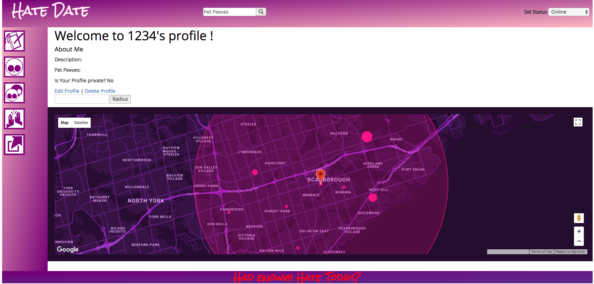
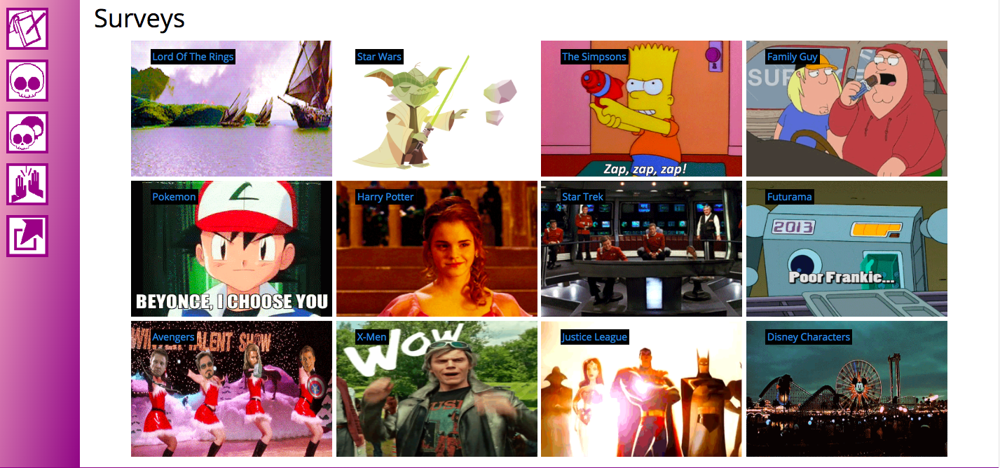
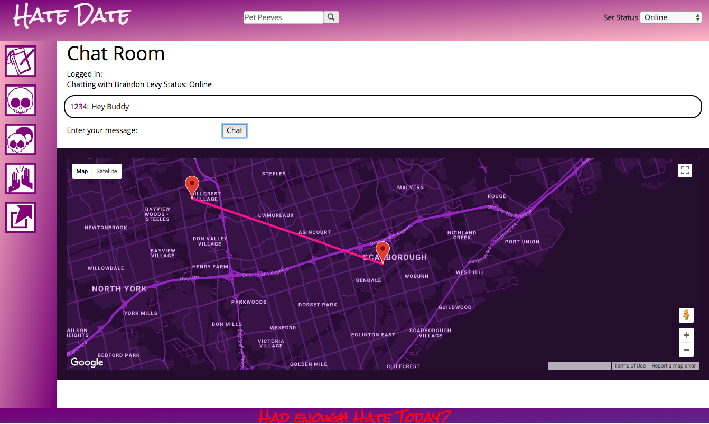

Hi, I’m Spencer,
I felt my life needed something MORE, a real JOLT, so I dove into Web Development, completing Bitmaker’s Web Dev Intensive program and loved it!! Programming is a great combination of challenge and artistic expression, there’s always something more to learn.
Afterward, I did their Product Management class, and have previously completed George Brown’s Data Analytics Post Graduate Certificate. I hope to work on projects that integrate data analytics with web development.
For now, I continue improving my React skills and working as a freelancer on a client’s website.
Thank you for your interest!
|
|
Project HateDate
HateDate is a social networking app, connecting you with people nearby based on shared hates.
Users take surveys based on pop culture entertainment, comparing characters through gifs using the Giphy API.
After completing a survey, results are compared to other users and matched if greater than 75% similarity. HateDate then shows their relative locations using Google Maps API.
Take a look: HateDate
Google Maps marks your relative location and default radius. The bigger the pink circles inside that radius, the more users are in those relative locations.
A list of surveys to choose from
A Match has been chosen, Google Maps shows your approximate distance and opens a chat between you.
Hover over a stage for more details
Once the most important User Stories have been determined, a functional Minimum Viable Product (MVP) should be developed.
A timeline of when User Stories and features will be developed.
Putting the product in front of the User, whatever state it is in, to receive feedback, iterating at each step.
After public deployment, continuous iteration is important for further improvement.
Now that the product is deployed, the team can reach for Key Performance Indicators (KPI).
Discussing the issue with interviewees helps to reveal what actual problems exist and how they feel about the topic. Managers should avoid assumptions about what Users actually want beforehand.
User Interviews will also elucidate who your real Users are, defining them in Personas helps to organize your target audience.
Structured, unbiased questions in User Interviews will lead to users actual experiences and how you can realistically improve upon it. You may find they don’t need improvement, in which case your preliminary research saved you the effort of developing unnecessary products.
User stories are descriptions of a particular feature in the frame of “As a User, I would like…”. Managers can then prioritize User stories based on their effort and benefit to the User.
Wireframes and mock-ups are a way to get a feel for the flow of the proposed product.